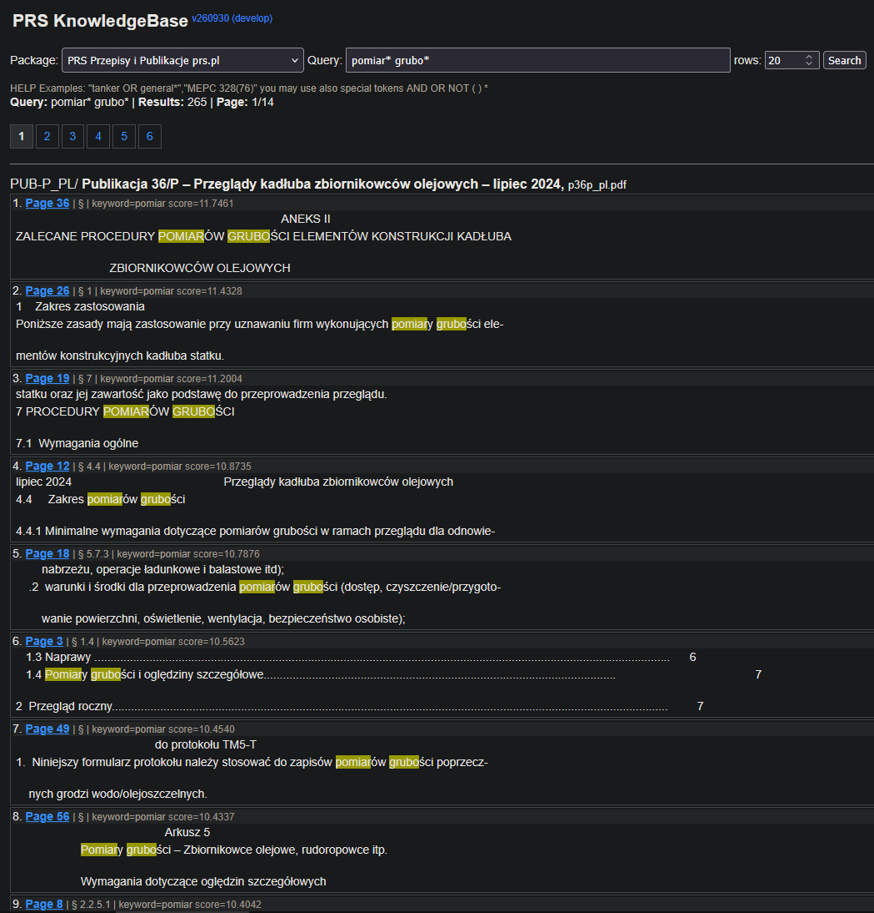
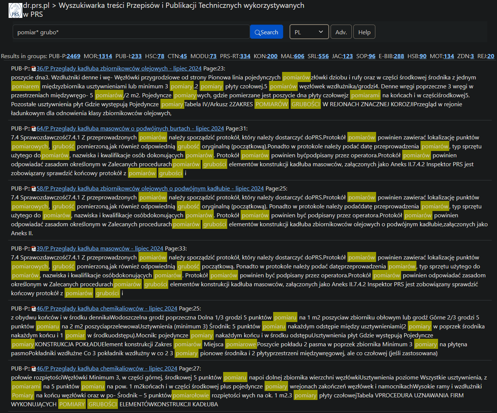
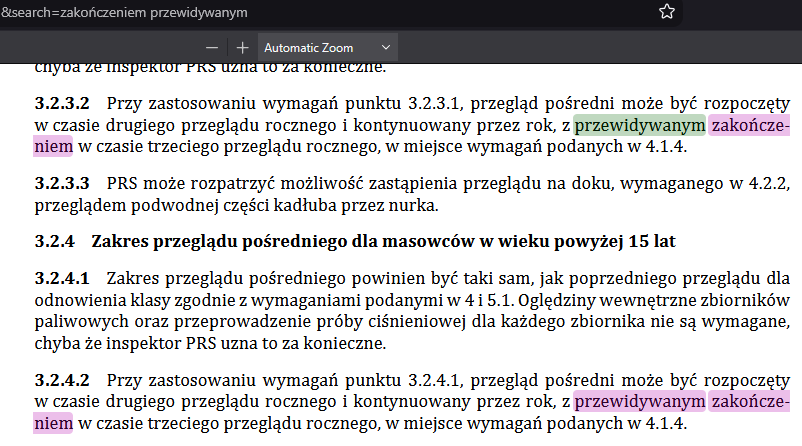
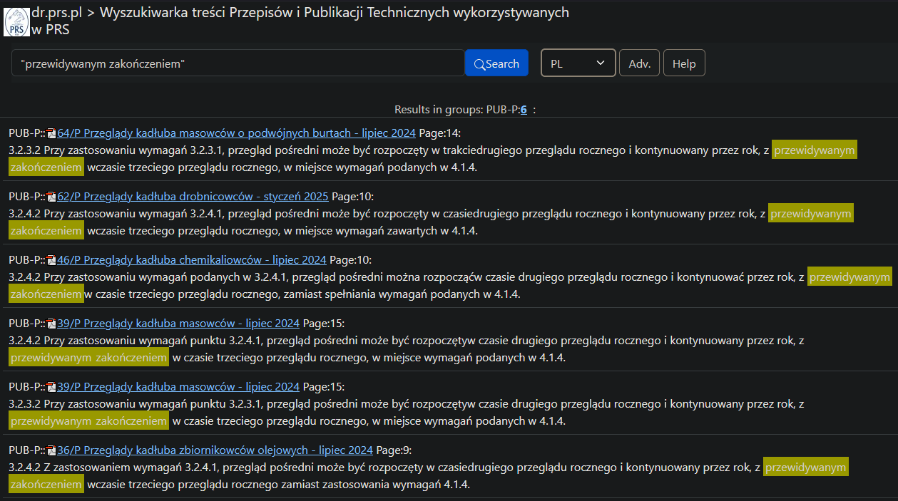
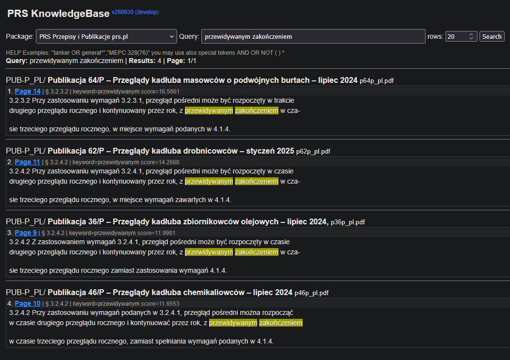
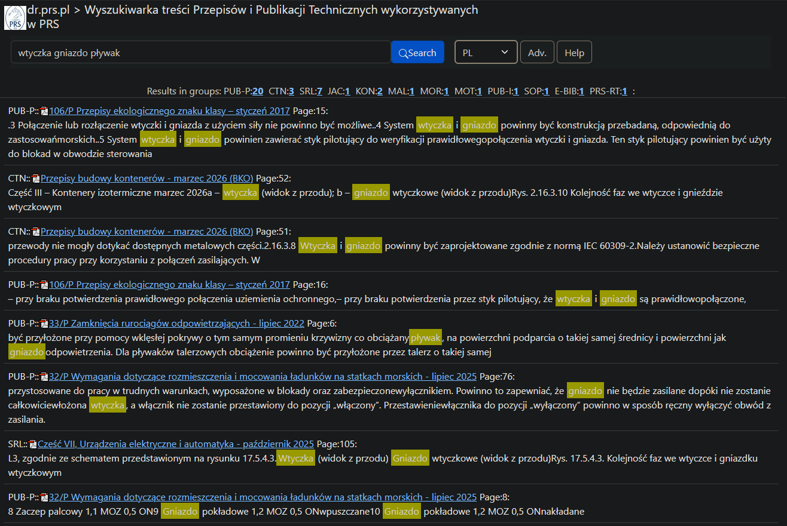
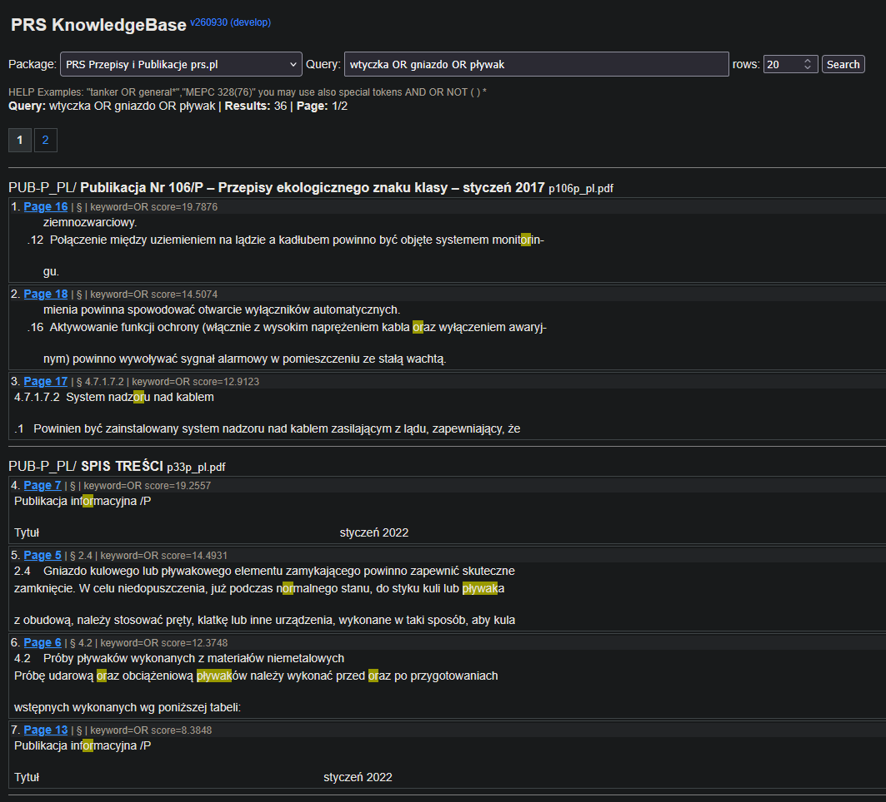

Rules Search v2 eval
12.10.2026 pb
Wyszukiwanie
Wiele wyników w jednym pliku
W sytuacji gdy znalezionych jest wiele rekordów w jednym pliku, wyszukiwarka wyświetla je wszystkie. Czasami trzeba przejść na kolejną stronę, żeby się przez nie przebić. W starej wyszukiwarce rekordy były agregowane (jeśli dostatecznie blisko siebie) i sortowane globalnie, a nie w obrębie jednego pliku; dzięki temu można było przejrzeć najwazniejsze wyniki z różnych plików dość szybko.
Dobrze rozwiązane to jest w wyszukiwarce recoll. Wyszukania z każdego pliku są agregowane w jeden rekord i wyświetlone jeden po drugim jako blok tekstu. Na każdy plik przypada tylko jeden blok. Po kliknięciu w niego przechodzi się do podstrony zawierającej szczegóły wyszukania w danym pliku --- snippets (fragmenty) oraz odpowiadające im strony w pliku PDF.
Nowa wyszukiwarka:

Stara wyszukiwarka:

Line break
Klasyczny problem, który rozwiązaliśmy w starej wersji przeglądarki,
a w nowej jeszcze nie. Przykładowo fraza
przewidywanym zakończeniem jest rozbita w pliku PUB 39/P
myślnikiem:

Stara wyszukiwarka poprawnie odnajduje ten wynik (jako jeden z sześciu):

W nowej widoczne są tylko cztery wyszukania, gdzie fraza nie jest rozbita:

Restrykcyjne wyszukiwanie
Domyślne wyszukiwanie jest zbyt restrykcyjne, a operatory AND/OR nie
działają. Przykładowo, słowa wtyczka gniazdo pływak nie są
w ogóle odszukane, gdyż w żadnym dokumencie nie występują obok
siebie:
W starej wyszukiwarce odnajdywane są istniejące pary z tych trzech słów:

Operatory logiczne zdają się nie działać; OR wyszukiwane jest jako słowo lub fragment słowa.

Przykład z Helpa sugeruje użycie cudzysłowia w tym przypadku, ale to również nie działa:
UI / bugi
Metadane
Wgranie nowego pliku PDF, nawet identycznego jak poprzedni, powoduje nadpisanie (wyzerowanie) jego ręcznie wprowadzonych metadanych. Powinny być one "dziedziczone" jako wstępne wartości do dalszych modyfikacji.
Fatal error
Czasami przy klikaniu WSTECZ (np. jeśli wybraliśmy upload_url, a potem jednak rezygnujemy) pojawia się komunikat:
Fatal error: Uncaught ValueError: Path cannot be empty in E:\dr_prs_pl_htdocs\search\.www\explorer.php:1732 Stack trace: #0 E:\dr_prs_pl_htdocs\search\.www\explorer.php(1732): fopen('', 'rb') #1 E:\dr_prs_pl_htdocs\search\.www\explorer.php(2104): FileManager->uploadFromUrl('', '') #2 E:\dr_prs_pl_htdocs\search\.www\explorer.php(3331): FileManager->run_fm(Object(Location)) #3 E:\dr_prs_pl_htdocs\search\dms.php(2): include_once('E:\\dr_prs_pl_ht...') #4 {main} thrown in E:\dr_prs_pl_htdocs\search\.www\explorer.php on line 1732Adres URL to wtedy:
https://dr.prs.pl/search/dms.php?dir=Document expired
Często po kliknięciu wstecz w przeglądarce pojawia się błąd:
Document Expired
The requested document is not available in Firefox’s cache.Towarzyszy mu zwykle adres:
https://dr.prs.pl/search/dms.phpKilkukrotne wciśnięcie wstecz pozwala wrócić do poprzedniego menu.
Ogólnie brakuje Wstecz jako takiego zawartego w UI
strony.